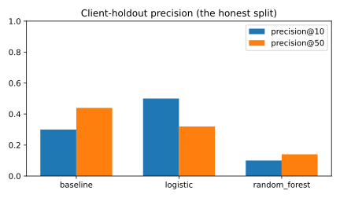
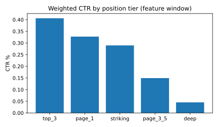
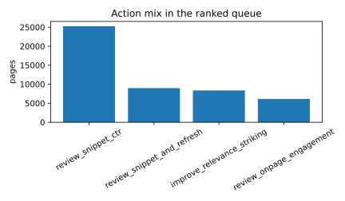
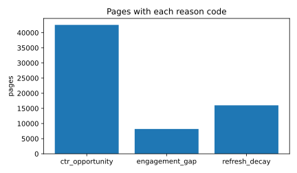

Abstract
Which of a client's visible pages should a content reviewer open first for a CTR or engagement fix? We looked at 120,258 pages from 47 real clients, with features from January and February 2026 and an outcome measured in March. We compared a logistic regression and a random forest against a transparent rule that scores CTR and engagement gaps by exposure, and validated on clients the model never saw. On held-out clients the rule matched the model at the top of the queue (precision@50 44% vs 32%) and beat it on the wider cut, at a 15.9% base rate; the random forest did not generalize. The output is a ranked, reason-coded review queue that tells a content reviewer which pages to open first.
1. The problem
The decision this supports: a content reviewer has limited time and a pool of thousands of pages. Which pages should they open first, and for what kind of fix?
- Decision: which high-exposure pages to review first, for a CTR fix (title, meta, snippet, intent match) or an engagement fix (on-page structure, depth, intent fulfillment).
- Who acts: a content reviewer or editor.
- Cost of a wrong call:
- False priority: review time spent on pages with low volume or a gap that is mostly noise.
- Missed opportunity: a page that could have improved never gets looked at.
Why a score instead of a single cutoff: one rule like "below tier CTR" does not fit every page. CTR gaps differ by content type and engagement gaps by intent, so a combined score can rank the whole queue instead of flagging one slice. The question is whether a simple rule can rank that queue as well as a trained model on new clients.
2. Data
This analysis uses the FlyRank ML Internship warehouse (gated Hugging Face release). Two tables:
fact_content_daily_performance: daily search and analytics data per page, including impressions, clicks, average position, sessions, and engaged sessions.dim_content: page metadata such as content type, main intent, and created and updated dates.
Date windows
- Feature window: January 1 to February 28, 2026. Everything a model is allowed to see.
- Outcome window: March 2026. Where the label is measured.
- Decision moment: March 1, 2026. At that point the feature window is known and the outcome is not.
Unit of analysis: one row is one page (content_hash_id) for one client, summarized over the feature window.
What we excluded and why
- Measurement flags (
gsc_data_available,ga4_data_available): used only to filter rows, never as features. trend_directionandtrend_pct: they answer a different question (trend decline), not opportunity scoring.- Pages under 100 impressions: not loaded at all.
- Pages under 500 impressions: kept out of the queue because their CTR is mostly noise. This misses some real opportunities; that is the stated cost of a low-noise queue.
Public safety: only pseudonymized hashes ever leave this notebook. No client names, URLs, or raw queries.
3. Method
The label: below_tier_outcome. A page is a positive case when its CTR in the outcome window (March 2026) is more than 0.1 percentage points below the weighted CTR median of its position tier. The label is the observed outcome and nothing else. An earlier version of the label also required the same gap in the feature window. That was a leak, because the feature-window gap is a feature and half the label became knowable at the decision moment. That condition was removed.
Features
All knowable at the decision moment:
log_impressions_fw,ctr_fw,avg_pos_fw,pos_volatility_fw,engagement_rate_fw,log_sessions_fw,tier_ctr_gapcontent_type,main_intent,position_tier
Baseline
A transparent rule: score = has_volume * max(tier_ctr_gap, 0) * impressions_fw. It ranks pages by exposure times gap, with a floor of 500 impressions. This is the rule the playbook uses.
Models
Logistic regression and a random forest, with scaled numeric features and one-hot encoded categories, balanced class weights, and random seed 42.
Validation
Two splits on the same data. A random split (pages from the same client can appear on both sides) and a client-holdout split (whole clients held out). The client-holdout split is the honest number, because the queue must rank pages for clients the model never saw.
Leakage checks, four
- Feature window: every feature ends before March 1.
- Product flags: none exist in the warehouse.
- Tier medians: recomputing them on training data only changed precision by almost nothing, so the leak is real but mild.
- Label source: the corrected label uses the March outcome only. 9,858 pages would differ under the old two-window label.
4. Results vs baseline
The honest number is the held-out table below: whole clients held out, at a 15.9% base rate.
| Method (client holdout) | Precision @10 | Precision @50 |
|---|---|---|
| Rule-based baseline | 30% | 44% |
| Logistic regression | 50% | 32% |
| Random forest | 10% | 14% |
| Base rate (no model) | 15.9% | 15.9% |
The random forest did not generalize to new clients, and its exact precision moved a few points between runs in our environment, so we report it only qualitatively.
- Logistic regression wins the very top of the queue: precision@10 50% vs 30% for the rule.
- The rule holds the wider cut: precision@50 44% vs 32% for logistic regression.
- Both beat the base rate by a wide margin, so the ranking carries signal.
The trap we avoided: on a random split the models look near perfect (precision@50 96% for both), because pages from the same client leak across both sides. The drop from that split to the client holdout is how much memorization was hiding.

The signal behind the rule
Weighted CTR falls steadily as pages sit lower in the results. The rule leans on this gradient by scoring exposure times gap.

5. Limitations
What this work cannot claim:
- No causal claims. Ranking pages by opportunity does not prove that editing them improves CTR. That needs a controlled experiment.
- One snapshot. The queue is built at one decision moment (March 1, 2026) and does not follow pages over time.
- Fixed calendar window. All pages share the same feature window, but some clients started tracking later, so younger clients get less history or drop out.
- Tier medians are portfolio level, not per query. A page can rank for terms where low CTR is normal (comparison or branded queries) and still be a false priority.
- The 500-impression floor is a deliberate trade-off. It keeps the queue low-noise but misses real opportunities on smaller pages.
- The engagement arm is directional, not validated. It treats one click as roughly one engaged session, a conservative proxy for content fixes.
- Client mix shifts the base rate. The held-out clients happened to have a lower below-tier rate (15.9% vs 57.5% on the random split), so results depend on which clients the queue is applied to.
- Random forest precision was not stable run to run in our environment, so we report it only qualitatively.
6. Ranked recommendations
The playbook turns the validated rule into a ranked queue for a content reviewer.
Score: two arms, added together.
- ctr_arm: exposure times the CTR gap over the tier median, only for pages with at least 500 impressions and a gap over 0.1 percentage points.
- eng_arm: the engagement gap below
eng_target(the weighted median engagement rate for the page's content type and intent), scaled by sessions, only for pages with at least 50 sessions.
Queue: pages with a ctr_opportunity or an engagement_gap flag, sorted by score, highest first. Refresh-only pages are counted but kept out, because refreshing is a scheduled task that does not need editorial ranking. The queue at the decision moment holds 48,704 pages.
Reason codes:
ctr_opportunity: visible page below its tier CTR. This is the validated signal.engagement_gap: sessions but engagement beloweng_target. Directional context.refresh_decay: old or stale and still visible. Context from the paper's freshness findings.
Archetype to action
| Archetype | What the page looks like | Action |
|---|---|---|
visible_ctr_underperformer |
high volume, CTR below tier, page 1 or top 3 | review_snippet_ctr |
visible_ctr_striking |
high volume, CTR below tier, positions 11 to 20 | improve_relevance_striking |
visible_ctr_stale |
ctr gap and also old or stale | review_snippet_and_refresh |
visible_engagement_weak |
sessions but weak engagement | review_onpage_engagement |
mature_visible |
old or stale, no ctr gap | refresh_mature_page |
low_visibility |
everything else | monitor |
What is never automated: editing or publishing pages, deleting or merging pages, refreshing content without a human copy review, or using the queue as a causal claim. The queue ranks pages for a person; it does not decide on its own.
Where it stops being valid: it is decision support for one snapshot, the tier medians are portfolio level, and the engagement arm is directional. Monitoring triggers decide when the queue needs rebuilding (tier median drift, base rate shift, rolling precision).
What the queue tells a reviewer


7. Reproducibility
Everything here runs from the notebooks in this repository, in order, top to bottom. They need access to the gated FlyRank ML Internship warehouse; the numbers trace back to a committed receipt file.
- Research question: w01_research_question.ipynb
- Data contract: w03_data_contract.ipynb
- Leakage checks: w03_feature_leakage_check.ipynb
- Rule baseline and queue: w04_baseline_score.ipynb
- Models: w05_model.ipynb
- Validation audit: w06_validation_audit.ipynb
- Action playbook: w07_action_playbook.ipynb
- Capstone (this write-up, end to end): capstone.ipynb
- Numbers receipt: model_metrics.json
Seed: 42. Split: client holdout. The ranked queue itself is regenerated by the notebooks, because the CI leak guard blocks committing data files.
8. Credits and data
This project was built as part of the FlyRank ML internship, on the FlyRank ML Internship dataset (gated Hugging Face release). Many thanks to the FlyRank team for the data access and the review guidance.